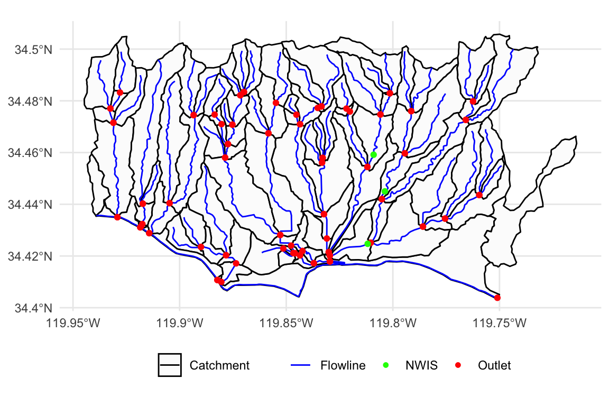

TL;DR
The nwmHistoric package provides utilities for finding NHD comids, NWIS gages IDs, and NHD geometries
# Define a simple featrues POINT pt = AOI::geocode("Goleta", pt = T) # Define a simple featrues POLYGON area = AOI::aoi_get(list("UCSB", 10, 10)) # Discover NHD comid by point discover_nhd(pt) # Discover NHD comid(s) by area discover_nhd(area) # Discover NHD comid(s) by area and return geometry # Users can select outlet, flowline, or catchment realizations discover_nhd(area, "flowline") # Find NWIS gages with collocated NWM flow flowcasts discover_nwis(area)
COMID Identification
Point Search
Often users don’t know the NHD identifier they need. Across the R ecosystem there are utilities for identifying spatial regions of interest and geocoding (mikejohnson51/AOI) and discovering catchments identifiers by lat/lng (nhdplusTools package)
Here, we offer a function - discover_nhd - that mirrors the functionality of nhdplusTools::discover_nhdplus_id for finding the NHDPlus catchment containing a defined point location:
library(AOI) library(nwmHistoric) library(nhdplusTools) # Create POINT object by geocoding "UCSB" pt = AOI::geocode("Goleta", pt = T) # COMID using nhdplusTools (id2 = nhdplusTools::discover_nhdplus_id(pt)) #> [1] 17595383 # COMID using nwmHistoric (id = discover_nhd(pt)) #> [1] 17595383
Area Search
discover_nhd extends the search capabilities from point objects to polygon (areal) extents using the National Water Census Geoserver.
# AOI defined by the 10x10 mile area surrounding UCSB AOI = AOI::aoi_get(list("UCSB", 10, 10)) # Find COMIDS (ids = discover_nhd(AOI)) #> [1] 17595279 17596125 17596119 17596117 17596115 17595199 17595219 #> [8] 17595191 17595225 17596149 17595427 17595405 17596109 17595223 #> [15] 17595189 17595429 17595393 17596111 17595395 17595361 17595357 #> [22] 17596113 17595239 17595201 17596077 17595277 17595217 17596229 #> [29] 17596183 948060316 17596101 17595215 17596103 17596099 17595203 #> [36] 17595205 17595221 17595187 17596091 17595193 17595233 17595181 #> [43] 17595183 17596139 17595409 17595391 17595413 17596079 17595401 #> [50] 17596135 17596143 17596107 17595383 17595407 17595351 17595283 #> [57] 17596097 17595213 17595235 17595237 17596151 17595367 17596147 #> [64] 17596141 17595425 17596095 17595369 17595271 17596093 17595231 #> [71] 17595185 17595253 17596167 17595411 17596145 17595415 17596217 #> [78] 17596075 17595433 17596211 948060315 948060188 17595389 17595179 #> [85] 17595227 17595197 17595325 17595349 17595229 17595195 17595359 #> [92] 17595327 948060317 948060187 17596177 17595273 17596083 17595321 #> [99] 17596215 17595353 17595323 948060094
Finding NWIS Streamgages
Analogous functionality for finding USGS NWIS site numbers is provided with discover_nwis.
IMPORTANT:: This function only returns NWIS sites that record streamflow (USGS param code ‘00060’) and are collocated with an NHD COMID represented in the NWM.
nwis = discover_nwis(AOI) head(nwis) #> Simple feature collection with 3 features and 5 fields #> geometry type: POINT #> dimension: XY #> bbox: xmin: -119.8118 ymin: 34.42472 xmax: -119.8038 ymax: 34.45916 #> epsg (SRID): 4269 #> proj4string: +proj=longlat +ellps=GRS80 +towgs84=0,0,0,0,0,0,0 +no_defs #> agency_cd site_no station_nm site_type #> 1 USGS 11120000 ATASCADERO C NR GOLETA CA ST #> 2 USGS 11120500 SAN JOSE C NR GOLETA CA ST #> 3 USGS 11119940 MARIA YGNACIO C A UNIVERSITY DRIVE NR GOLETA CA ST #> geometry comid #> 1 POINT (-119.8118 34.42472) 17595429 #> 2 POINT (-119.809 34.45916) 17596109 #> 3 POINT (-119.8037 34.445) 17596111
NHD Realizations
The NHDPlusV2 data model loosely conforms to the HY_Features Conceptual Model with a mapping shared here. nwmHistoric extends the ability of discover_nhd to retrieving catchment, flowline, or outlet geometries.
# Return Catchment boundaries catch = discover_nhd(AOI, feature = "catchment") (catch[1,]) #> Simple feature collection with 1 feature and 1 field #> geometry type: MULTIPOLYGON #> dimension: XY #> bbox: xmin: -119.8822 ymin: 34.40421 xmax: -119.8252 ymax: 34.41777 #> epsg (SRID): 4269 #> proj4string: +proj=longlat +ellps=GRS80 +towgs84=0,0,0,0,0,0,0 +no_defs #> # A tibble: 1 x 2 #> comid geometry #> <int> <MULTIPOLYGON [°]> #> 1 948060316 (((-119.8821 34.4105, -119.8822 34.41076, -119.8813 34.41055, -119.… # Return Flowline paths fl = discover_nhd(AOI, feature = "flowline") (fl[1,]) #> Simple feature collection with 1 feature and 1 field #> geometry type: MULTILINESTRING #> dimension: XY #> bbox: xmin: -119.7944 ymin: 34.45968 xmax: -119.7753 ymax: 34.48279 #> epsg (SRID): 4269 #> proj4string: +proj=longlat +ellps=GRS80 +towgs84=0,0,0,0,0,0,0 +no_defs #> # A tibble: 1 x 2 #> comid geometry #> <int> <MULTILINESTRING [°]> #> 1 17595279 ((-119.7753 34.48279, -119.7766 34.48119, -119.7767 34.48057, -119.7… # Return outlet locations out = discover_nhd(AOI, feature = "outlet") (out[1,]) #> Simple feature collection with 1 feature and 1 field #> geometry type: POINT #> dimension: XY #> bbox: xmin: -119.7944 ymin: 34.45971 xmax: -119.7944 ymax: 34.45971 #> epsg (SRID): 4269 #> proj4string: +proj=longlat +ellps=GRS80 +towgs84=0,0,0,0,0,0,0 +no_defs #> # A tibble: 1 x 2 #> comid geometry #> <int> <POINT [°]> #> 1 17595279 (-119.7944 34.45971)

Putting it all together
Lets look at one last simple example that has huge implications for water resource reach. The aim is to identify a self-contained (e.g watershed) catchment and extract forecasts streamflows along the mainstem for 2015.
Tracing Basins
A key feature of the nhdplusTools package is network tracing via the Network Linked Data Index. These capabilities allow users to define a starting point, and traverse the network to find the upstream (or downstream) flow lines and indexed elements.
Here we use the NLDI tools to trace a upstream network and the nwmHistoric to extract the relevant streamflow forecasts from the NWM version 2.0.
# Start with a nwis site ID nldi_feature <- list("nwissite", "USGS-05428500") # Find the Upper Mainstem um = navigate_nldi(nldi_feature, mode = "UM") # Use the UM comids to query NWM flows for 2015 flows = readNWMdata(comid = um$nhdplus_comid, startDate = "2015-01-01", endDate = "2015-12-31") # For visualization we also retrive the basin boundary and upper tributrary # Find the Upper Tributrary ut = navigate_nldi(nldi_feature, mode = "UT") # Find the UT basin boundary basin = get_nldi_basin(nldi_feature)